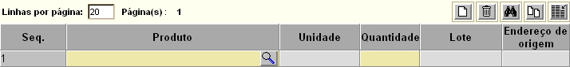

Dispensação para Paciente [ Voltar ]Utilize este formulário para processar dispensações para paciente. O formulário "Dispensação para Paciente" encontra-se dentro do menu "Paciente". Ao clicar no nome do formulário, o sistema exibirá a seguinte tela:
Para processar uma dispensação de medicamento a paciente, siga os passos abaixo: 1º Passo: selecione o paciente para o qual se deseja efetuar a dispensação. Clique no botão ao lado do campo "Paciente" para
selecioná-lo a partir de uma listagem de pacientes cadastrados. Após
selecionado o paciente, ao lado do campo "Paciente" para
selecioná-lo a partir de uma listagem de pacientes cadastrados. Após
selecionado o paciente, Observação: o campo "N°. da saída" apresenta um sinal de mais "+" por padrão. Desta forma, assim que a dispensação é salva, o sistema lhe atribui o próximo número disponível.
2° Passo: se necessário, informe o número do processo judicial e nome do responsável pela coleta dos medicamentos. Caso nenhum processo ou responsável tenha sido cadastrado ainda, clique em um dos botões ou para abrir em outra janela a tela de cadastro dos mesmos. Para informações sobre como cadastrar um processo, favor ver o manual "Associar processo ao paciente". Para ver o passo-a-passo para cadastro de um responsável pela retirada de medicamentos, ver o manual "Autorização para dispensação". Após um
eventual cadastro de processo ou responsável, clique no botão
3º
Passo: clique no botão 
Em seguida, informe a quantidade para dispensação. Se desejar inserir outros produtos, clique no botão "Novo" da grade (ver imagem abaixo) e repita as operações do 4° passo.
6° Passo: se todos os dados
estiverem corretos, clique no botão 7°
Passo: se necessário, clique no botão Para imprimir o relatório de
dispensação, clique no botão |


 para visualizar a
tela de impressão da lista de separação.
para visualizar a
tela de impressão da lista de separação.  [Imprimir]
do navegador.
[Imprimir]
do navegador.